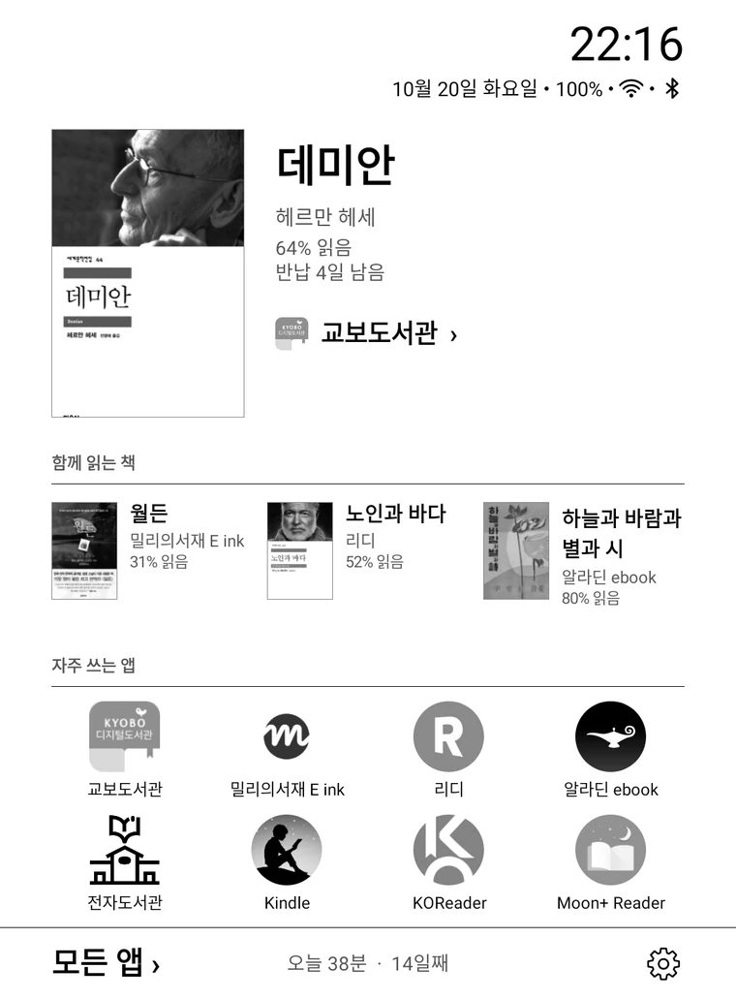
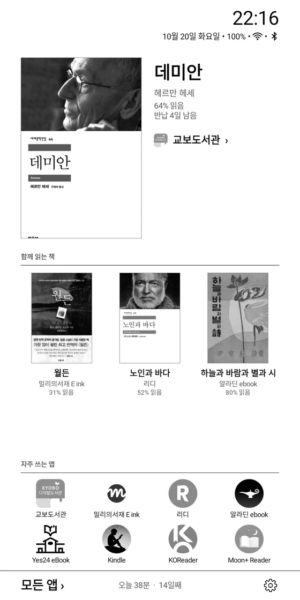
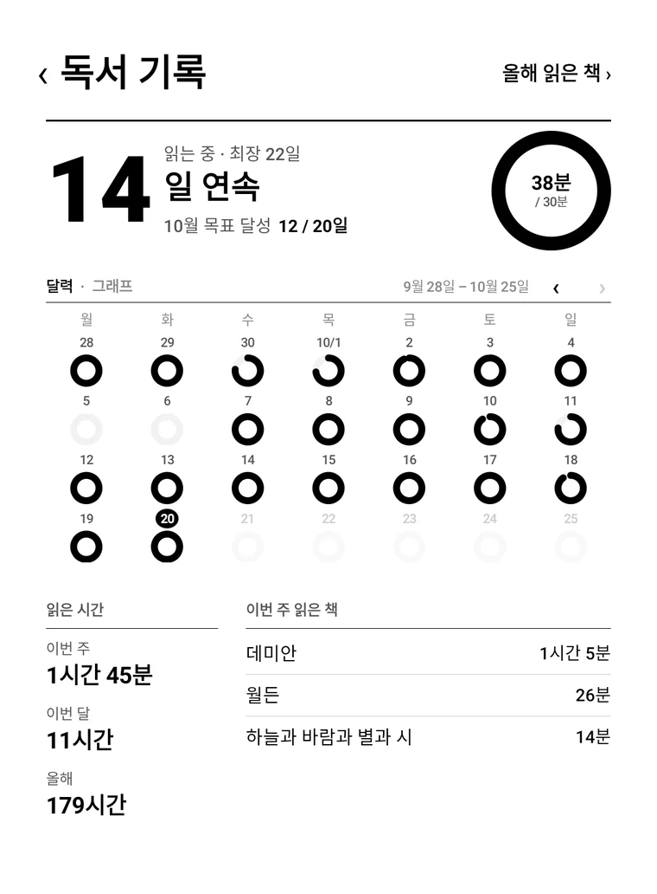
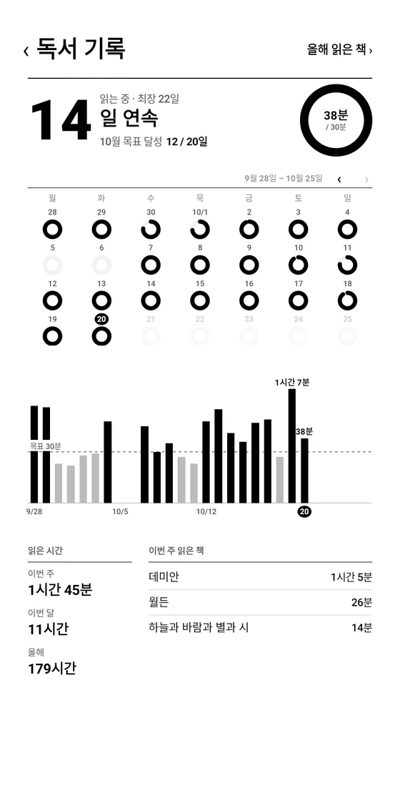
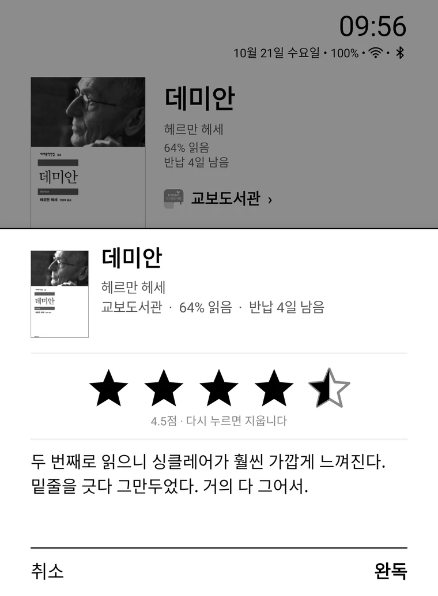
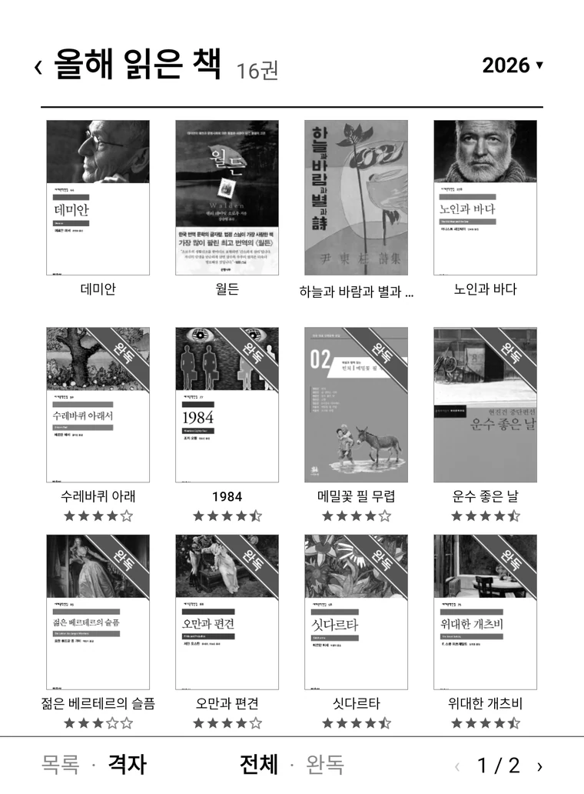
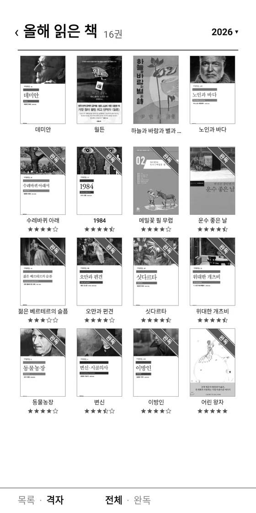

이북리더기를 위한 런처
지금 읽는 책을
홈 화면에.
읽고 있는 책, 자주 쓰는 앱, 오늘 읽은 시간만 둡니다. 나머지는 글자로, 한 쪽씩.




책은 펴기만 하면
홈에 들어옵니다.
이북 앱에서 책을 펴면 표지와 제목, 진행률, 반납일까지 가져와 홈 맨 앞에 둡니다. 직접 넣을 일이 없습니다.
- 이북 앱에서 책을 엽니다서재에서 누르거나, 읽던 책을 이어서.
- 홈으로 돌아오면 맨 앞에서재의 표지를 잘라 오고, 읽은 만큼 진행률이 바뀝니다.
- 누르면 그 앱으로책마다 읽는 앱을 기억해 바로 엽니다.
자동으로 추가되는 앱
 교보도서관
교보도서관 교보eBook
교보eBook 밀리의서재
밀리의서재 알라딘
알라딘 북커스
북커스 리디
리디 YES24 전자도서관
YES24 전자도서관 my YES
my YES YES24 eBook
YES24 eBook Moon+ Reader
Moon+ Reader Kindle
Kindle Libby
Libby KOReader
KOReader
읽은 시간은
책마다 남습니다.
이북 앱의 읽는 화면이 떠 있던 시간만 셉니다. 하루 목표를 채우면 링이 닫히고, 5분 넘게 읽은 날이 이어지면 연속일이 됩니다.


다 읽으면
별점과 한 줄 감상.
완독할 때 별을 반 개 단위로 매기고 감상을 몇 줄 남깁니다. 같은 책을 다시 읽으면 회차마다 따로 남습니다.

다 읽은 책은
한 해의 서가로.
완독한 책은 표지에 완독 띠를 두르고 별점과 함께 모입니다. 지난해의 서가도 해마다 따로 볼 수 있습니다.


이북리더기 화면에 맞춰
덜 움직입니다.
- 애니메이션 없음화면이 바뀔 때 깜빡임을 줄이려고 움직이는 것을 두지 않았습니다.
- 스크롤 대신 쪽목록은 한 쪽씩 넘깁니다. 밀거나 ‹ 1 / 2 › 를 누릅니다.
- 바뀐 곳만 다시시계가 바뀌면 시계만. 부팅 직후에도 바로 뜹니다.
자주 묻는 질문
- 어떤 기기에서 쓸 수 있나요?
- 안드로이드 9 이상의 이북리더기에서 씁니다.
- 무료인가요?
- 무료이고 광고도 없습니다. 비상업적 용도로 자유롭게 쓸 수 있습니다(PolyForm Noncommercial 1.0.0).
- 어떻게 설치하나요?
- GitHub 릴리스에서 APK 를 받아 기기에 옮기고 파일 관리자에서 눌러 설치합니다. 처음 한 번 '알 수 없는 앱 설치'를 허용합니다. 그다음 Pebble Desk 설정 › 앱 관리 › 기본 홈 앱에서 홈 앱으로 고릅니다. 새 버전은 설정 › 정보 › 업데이트에서 받습니다.
- 접근성 권한은 왜 필요한가요?
- 이북 앱에서 편 책을 알아보려고 씁니다. 지원하는 이북 앱의 화면만 받고, 다른 앱의 화면은 보지 않습니다. 읽은 시간은 안드로이드의 '사용 기록 액세스'로 셉니다.
- 기록은 어디에 저장되나요?
- 기기 안에만 저장되고 어디로도 보내지 않습니다. 인터넷은 표지 검색(YES24)과 새 버전 확인(GitHub)에만 씁니다. 앱을 지우면 기록도 함께 지워집니다.